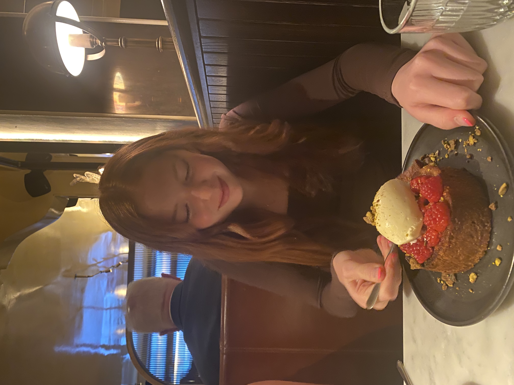

Hi! My name is Josie and I love food. I started by creating an instagram account, josiefoods8, and I found that documenting my food fueled something within me. Taking pictures of my food and posting to share with my friends became something I looked forward to. But, I wanted to do more and I wanted to actually review these delicious, or not so delicious, foods. This is why I started my own blog: to write about these foods and reccomend or critique them.